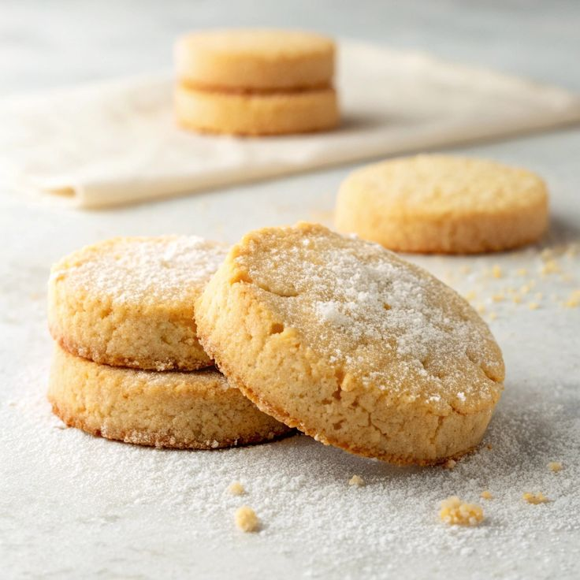

Shortbread Cookies

Description
A little bit of something sweet to end the day
Super easy to make and super delicious, we end our day with this marvellous recipe
Ingredients
- 2 cups butter, softened
- 1 cup white sugar
- 2 teaspoons vanilla extract
- 4 cups all-purpose flour
Steps
- Gather all ingredients.
- Preheat the oven to 350 degrees F (180 degrees C).
- Beat softened butter and sugar together in a large bowl with an electric mixer on medium speed until light and fluffy.
- Stir in vanilla; add flour gradually, mixing until a smooth dough forms.
- Fill cookie press with dough and form cookies onto two ungreased cookie sheets, spacing them about 1 ½ inches apart.
- Bake in the preheated oven until the edges of the cookies are just starting to turn golden brown, about 10 to 12 minutes.
- Remove the cookie sheets from the oven, and set them on a wire cooling rack for a few minutes.
- Then transfer the shortbread cookies to the rack to cool completely.
Check out our other delicious recipes back home